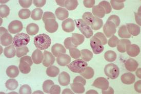
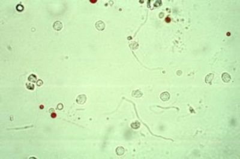
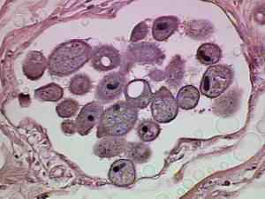

-

Hayem's Solution
An isotonic fluid used for diluting blood samples in red blood cell counts. Contains mercuric chloride, sodium sulfate and sodium chloride.
-

Blood
A fluid circulating through the heart, arteries, capillaries, and veins, carrying nutriment and oxygen to body cells, and removing waste products and carbon dioxide. It consists of the liquid portion and the formed elements.
-

Urine
The fluid excreted by the kidneys, stored in the bladder, and discharged through the urethra.
-

Stool
The solid waste that is left after food is digested. Stool forms in the intestines and passes out of the body through the anus.